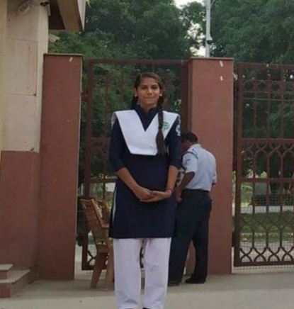

Swati Maurya, a student of Prayaas, was suffering from acute anaemia and was admitted in Swaroop Rani Hospital, Allahabad for around 9 days. Besides having other complications, her haemoglobin percentage had dropped down to as low as 5.2%. Her family was not in a position to deal with the situation financially. Prayaas helped the family by providing monetary support and blood units, owing to which the girl was able to recover and got discharged. Swati is one of the best students of Prayaas now and has continued to excel in her examinations.
Admission of Aanchal and Swati: Aanchal and Swati, two of the brightest minds currently studying in Prayaas were granted admission in Vishnu Bhagwan Public School to continue their studies in a renowned English medium school in Prayagraj. Both the girls, despite having such good academic performance, were not able to excel because of their poor economic backgrounds. Team Prayaas arranged for their admissions and is currently bearing their educational expenses.
